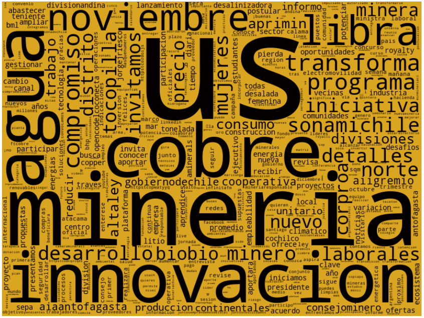

Proyectos Personales
Aquí puedes ver algunos de los proyectos en los que he trabajado, aplicando técnicas avanzadas de análisis de datos y machine learning.
Clasificador de Autos SUV
Red Neuronal Convolucional

Este proyecto desarrolla un modelo de redes neuronales convolucionales (CNN) para clasificar imágenes de vehículos en dos categorías: SUV y NO_SUV. Utilizando una base de datos con 8144 imágenes etiquetadas, se entrenó y evaluó el modelo para identificar correctamente estas categorías.
Se realizó la preprocesamiento de imágenes para normalizarlas y ajustarlas a un tamaño uniforme, y se construyó un modelo CNN con dos capas convolucionales y dos capas completamente conectadas. El entrenamiento se realizó durante 80 épocas, utilizando la función de pérdida de entropía cruzada y el optimizador de descenso de gradiente estocástico.
Los resultados mostraron una precisión del 87% en los datos de entrenamiento y del 80% en los datos de prueba, indicando un buen desempeño del modelo sin sobreajuste. Este modelo proporciona una base sólida para aplicaciones de clasificación de imágenes de vehículos en la industria automotriz.
Clasificador de Correos SPAM
Regresión Logística y Gaussian Naive Bayes

Este proyecto desarrolla un modelo de clasificación de correos electrónicos para identificar si un correo es spam o no. Utilizando el dataset de Spambase, se analizan 57 atributos de los correos para entrenar el modelo.
Se realizó la importación y preprocesamiento de los datos, dividiendo el conjunto en datos de entrenamiento y prueba. Se implementaron dos modelos de clasificación: regresión logística y Naive Bayes, evaluando su desempeño en términos de accuracy y f1-score.
Los resultados mostraron que la regresión logística clasificó correctamente el 88% de las observaciones, mientras que Naive Bayes tuvo una precisión del 85%. Estos modelos proporcionan una base sólida para la detección automatizada de spam en correos electrónicos.
Streamers más populares de Twitch del 2020
Análisis exploratorio en R
![[Descripción de la Imagen]](Analisis_exploratorioR.PNG)
Este proyecto analiza los 1000 streamers más populares de Twitch en 2020 para identificar las variables que influyen en el número de seguidores. Los datos incluyen tiempo de visualización y transmisión, pico y promedio de espectadores, seguidores ganados, visualizaciones, patrocinadores, contenido explícito y idioma.
Se realizaron análisis descriptivos y visualizaciones de datos para entender las distribuciones y relaciones entre variables. Se usaron modelos de regresión múltiple para determinar cómo estas variables impactan en el número de seguidores.
Los resultados muestran que el tiempo de visualización, el promedio de espectadores y el idioma de transmisión son factores clave que afectan la cantidad de seguidores. El modelo final proporciona insights valiosos para aquellos que buscan aumentar su audiencia en Twitch.
Análisis de la Industria Minera
Análisis de Sentimientos en Twitter
Este proyecto analiza los tweets relacionados con la industria minera en Chile para identificar el sentimiento predominante y diseñar estrategias que impulsen la industria del cobre. Los datos incluyen tweets de cuentas relevantes como CodelcoChile y mineriachilena.
Se realizaron procesos de limpieza y tokenización de texto, seguidos por análisis de bigramas y palabras frecuentes. Se identificaron palabras positivas (construcción, innovación, tecnologías) y negativas (sequía, climático, mentira) para calcular una métrica de sentimiento.
Los resultados muestran una tendencia positiva en los tweets, destacando la innovación y la construcción como temas clave. Este análisis proporciona insights valiosos para mejorar la comunicación y marketing en la industria minera.